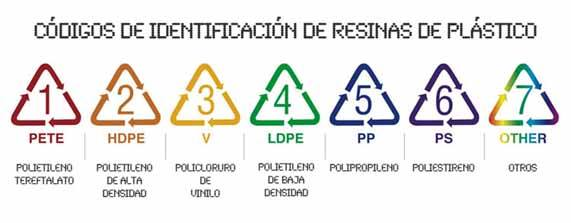

Guerrero Parra Mary Paz Angelly 3IV10
"CARACTERISTICAS DE LOS POLIMEROS"
Acronimos, estructura, propiedades, aplicaciones.
INTRODUCCIÓN
El plástico es cualquier material que mediante compresión, puede cambiar de forma y conservar esta de modo permanente. Los materiales pueden estar constituidos por compuestos orgánicos o sintéticos que tienen la propiedad de ser maleables y por tanto pueden ser moldeados en objetos sólidos de diversas formas. Esta propiedad confiere a los materiales plásticos una gran variedad de aplicaciones.Su nombre deriva de la plasticidad, una propiedad, que se refiere a la capacidad de deformarse sin llegar a romperse.
¿QUE SON LOS ACRONIMOS?
En el caso de los plásticos los acrónimos son las abreviaturas del nombre de las materias primas que componen cierta resina. Muchos de estos materiales tienen nombres muy complicados y es mucho más fácil referirse a ellos por sus Acrónimos.
Los códigos de identificación de plásticos son números que se encuentran dentro del famoso triángulo de flechas, comúnmente ubicado en la base de envases y productos plásticos, principalmente se conocen 7 codigos pero hay mas cada uno cuenta con el nombre del material con el que estan fabricados y se identifican por sus acronimos que son los siguientes:

"INDICE"